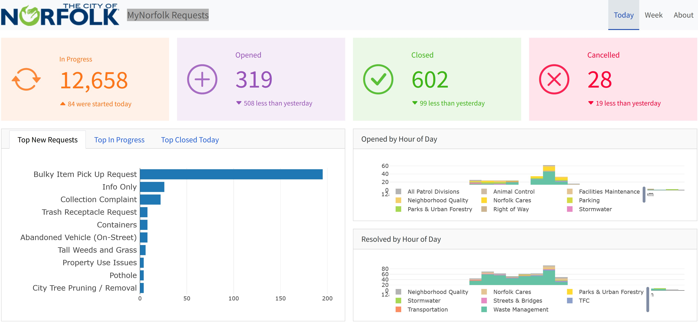
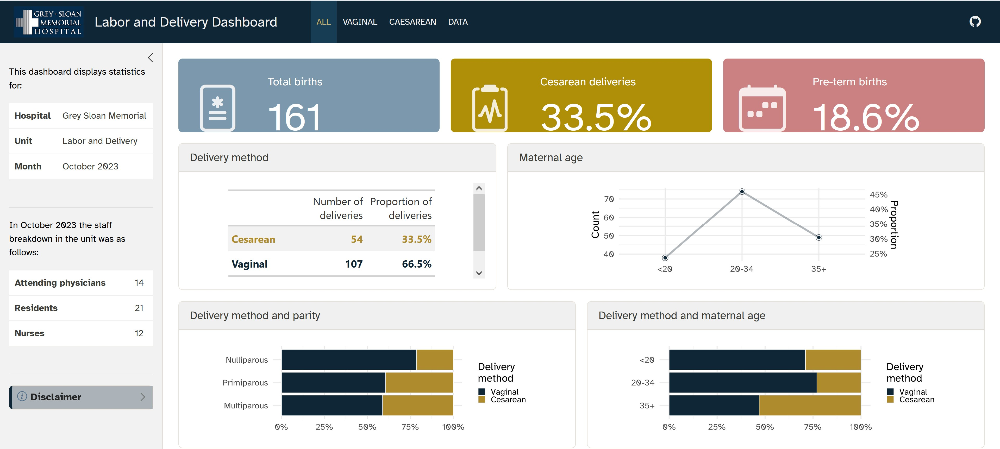
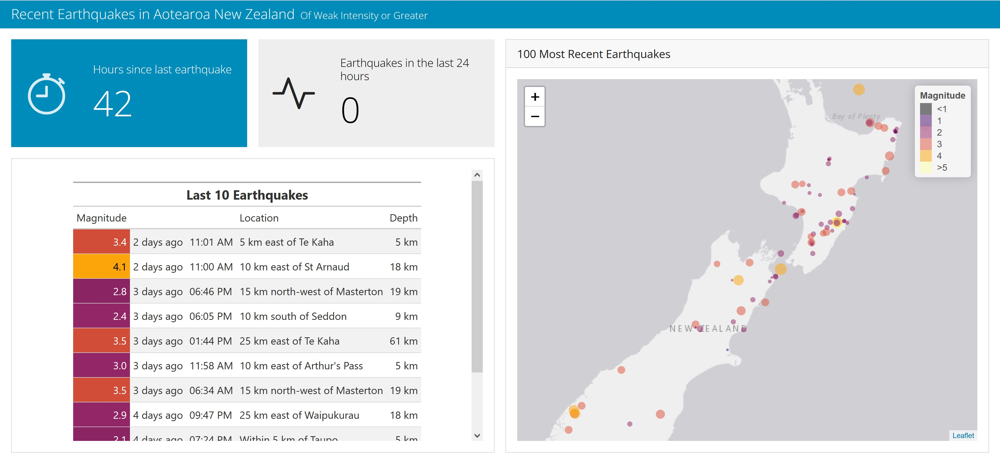
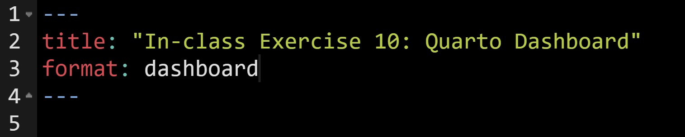
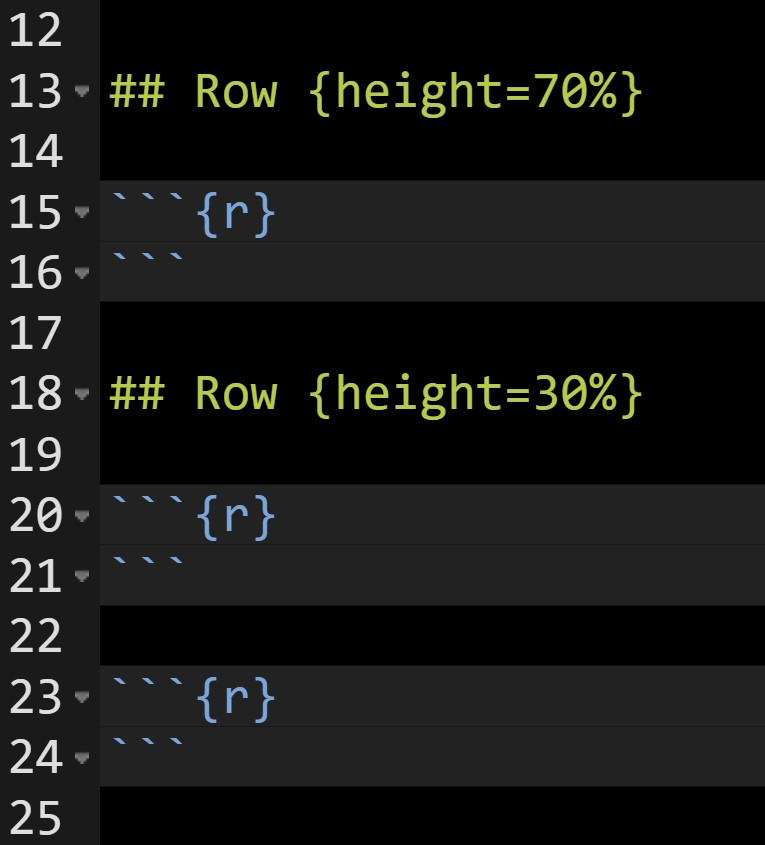
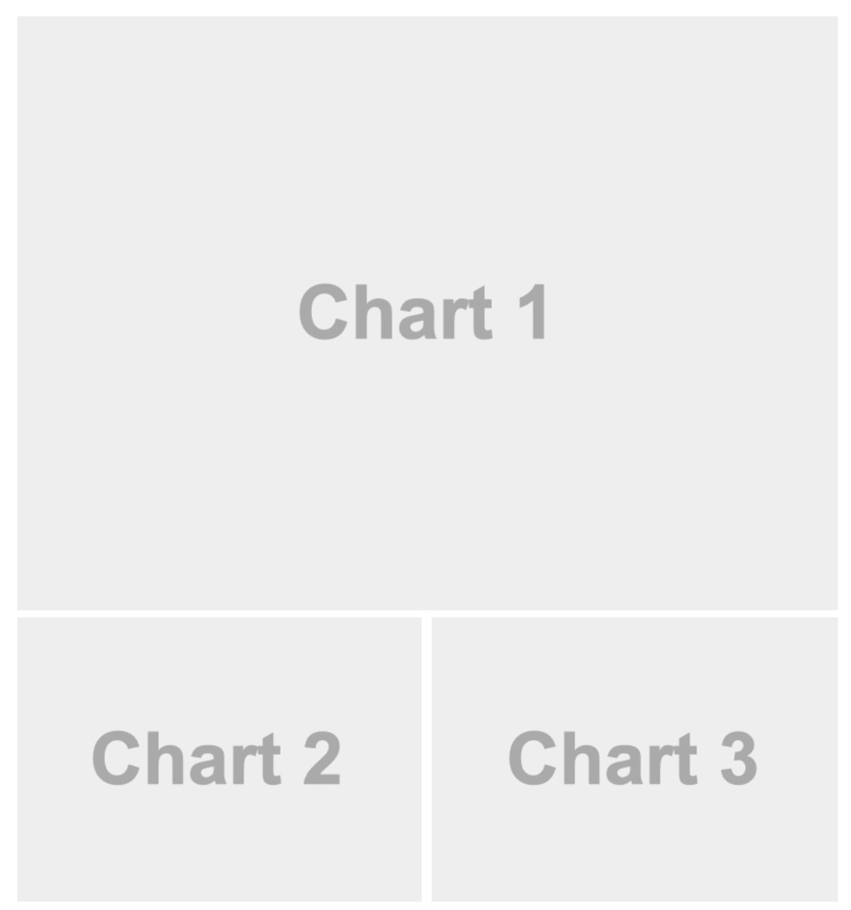
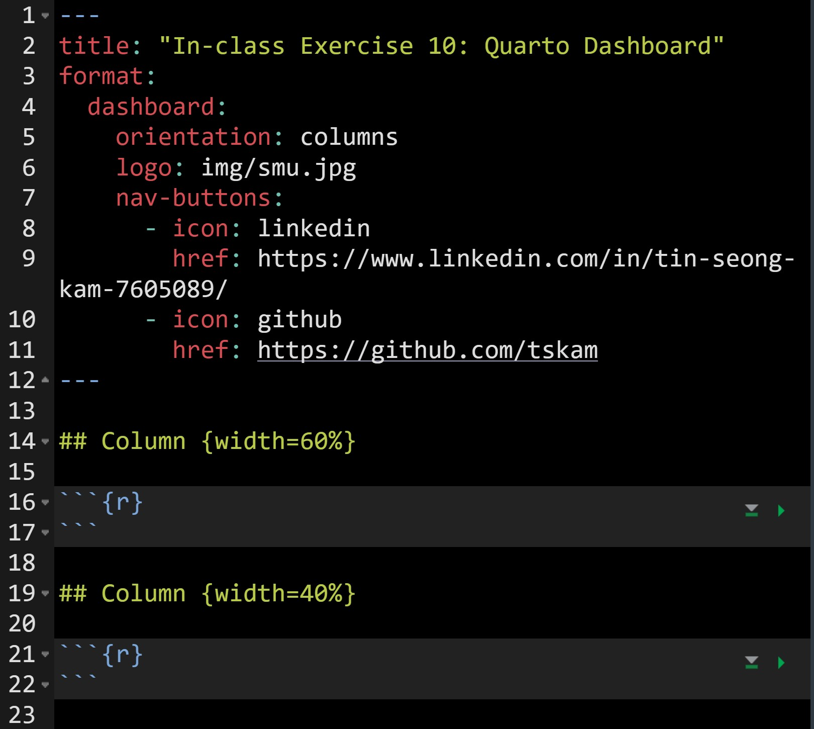
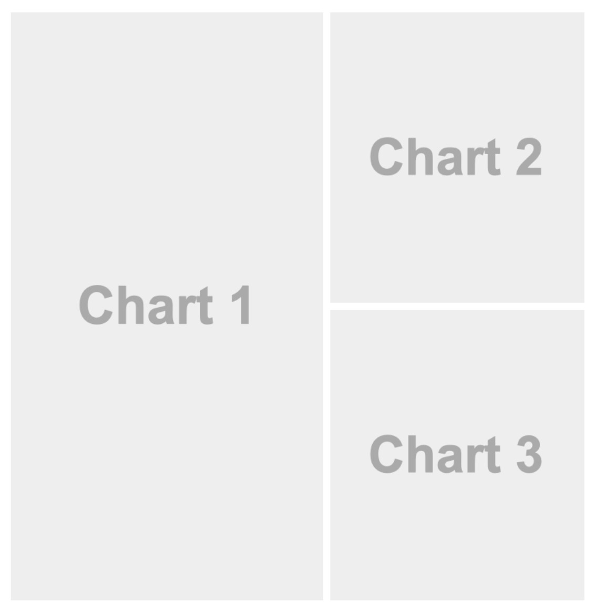
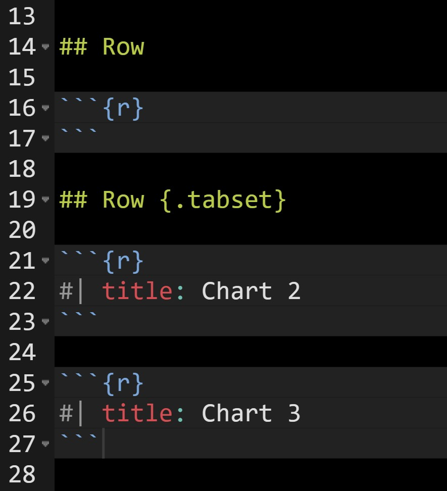
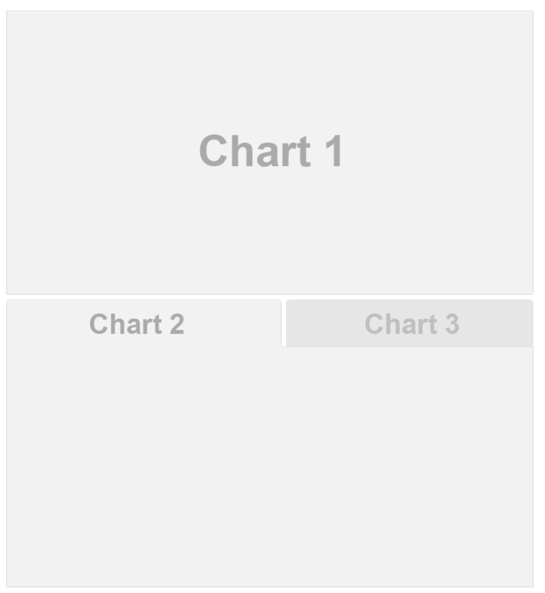

Lesson 10: Quarto Dashboard
Quarto dashboards
A new output format for easily creating dashboards from .qmd files. They make it easy to create interactive dashboards using Python, R, Julia, and Observable:
- Publish a group of related data visualizations as a dashboard. Use a wide variety of components including Plotly, Leaflet, Jupyter Widgets, htmlwidgets; static graphics (Matplotlib, Seaborn, ggplot2, etc.); tabular data; value boxes; and text annotations.
- Flexible and easy to specify row and column-based Layouts. Components are intelligently re-sized to fill the browser and adapted for display on mobile devices.
- Author using any notebook editor (JupyterLab, etc.) or in plain text markdown with any text editor (VS Code, RStudio, Neovim, etc.)
- Dashboards can be deployed as static web pages (no special server required) or you can optionally integrate a backend Shiny Server for enhanced interactivity.
Example 1: MyNorfolk Requests

For live demo, click on this link.
Example 2: Labor and Delivery Dashboard

For live demo, click on this link.
Example 3:

For live demo, click on this link.
Working with Quarto Dashboard
To get started, create a new Quarto document, then change format: to dashboard instead of html.

Dashboard Components
Navigation Bar and Pages — Icon, title, and author along with links to sub-pages (if more than one page is defined).
Sidebars, Rows & Columns, and Tabsets — Rows and columns using markdown heading (with optional attributes to control height, width, etc.). Sidebars for interactive inputs. Tabsets to further divide content.
Cards (Plots, Tables, Value Boxes, Content) — Cards are containers for cell outputs and free form markdown text. The content of cards typically maps to cells in your notebook or source document.
Layout: Rows


Layout: Columns


Tabset


Plots
Each code chunk makes a card, and can take a title